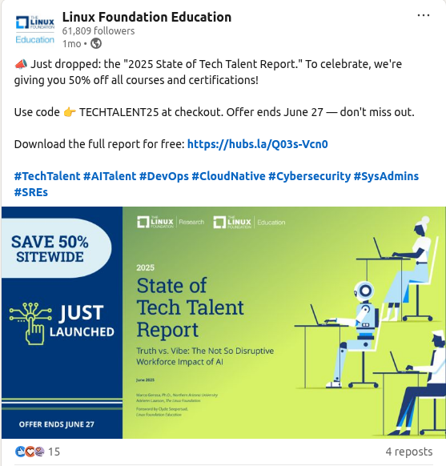

My little experience to prepare for the CKS exam in 2025
- Some sharing why you should attempt the exam
- Which course should you pick in order to prepare
- Where to practice without building a cluster
- Some experience you should focus on and not for the exam (Skip about this if you want to master everything)
- Extra Notes
- Voucher in general (to reduce exam costs xD)
- Other resources I used to write this article
1. Why you should attempt the exam
My opinions:
- First, I think almost every person who has attempted the exam will agree that when you prepare for the exam, you know more than you can be expected to know. For a small example, I never knew about the strace command in Linux until I prepared for the CKS exam via learn a course xD
- Second, I was wondering if this will not be really useful for my current job, a colleague who gave me a recommendation, just take the exam to increase my mindset, which I'm lacking currently.
- Third, not really important, but certification collection is something fun to do, like Achievement in a game, if you have ever played an online game like World of Warcraft, you will understand it xD. It is not about skill; it is all about having something called achievement, and this is a little achievement you can achieve by spending time and money(of course).
2. Which course should you pick
There are 2 courses: I do recommend taking both, of course xD, each course has a different advantage.
- From Kodekloud, they do have a lab environment set up for each Lesson. For example, you just finished watching a lesson (What are CIS Benchmarks 05:52), then the next lesson is Lab - Run CIS Benchmark Assessment tool on Ubuntu. It is really amazing and gave the speed of preparation for the exam.
- From Udemy by Zeal Vora, his explanation is very good for me. If you don't understand enough, simply watch again. He also gives some focus points on the exam in his course.
3. Where to practice without building a cluster
- Minikube for Sure, build your own lab in your laptop/pc, it begins to consume only with 2Gb memory.
- KillerCoda, a great place that covers almost every topic in the exam (except Istio xD). And yes, it is free!
- Kodekloud CKS Challenge, they give good lab-focused on exam scenario, and it's also free!
For the KillerCoda and Kodekloud CKS Challenge, finish all of them, even repeated daily, with a real understanding instead of memorization.
4. Some experience you should focus on and not for the exam
Because writing the whole content for the CKS exam again here is just wasted time for me and for those who are reading this, so I decided to write only something I feel is needed (at least for me xD)
If you do not have certification CKA, you should finish it first before taking the CKS exam, unless you are going to renew your CKS cert in 2025 xD.
LDR: I realized that everything I mentioned below they are all described well in course xD, so if you believe you watched the course and remember everything, you can skip this section.
[Yes] Audit Logging
- Link: https://kubernetes.io/docs/tasks/debug/debug-cluster/audit/
- Audit Policy: Be sure to understand, for example, you could be asked to log level
Metadatafor resourceconfigmaps, secretsin a specific namespace and so on... - Enable audit policy and modify settings: via API Server and some settings, like:
--audit-log-path: specifies the log file path that the log backend uses to write audit events, basically mount from host to API Server container, in the document it is well written already, remember in volumeMounts, mount it with readOnly = true- audit log setting like:
audit-log-maxage,audit-log-maxbackup,audit-log-maxsize. If you practice enough in section 3, you will understand why I point it out here. - Mount for audit log, remember to mount it with readOnly = false, if not, it will not be able to write the log!
[Should] Falco
- Well, this is tough in the exam because practice was all about modifying output to display as the question or enable it. But in an exam, you may need to write a new policy to handle specific events. So, for my personal experience, skip this because it would eat up a lot of time.
[Should] Immutability Readonly Filesystem
- This is all about adding securityContext, which prevents unauthorized modifications. For example, you can not edit a running file in a container if this setting is enabled.
apiVersion: v1
kind: Pod
metadata:
name: my-read-only-pod
spec:
containers:
- name: my-container
image: my-image:latest
securityContext:
readOnlyRootFilesystem: true
[Yes] CIS Benchmarks
- Yes, fucking yes!
[Not] Rego/OPA
- It is all good if you have time to learn it if, and you can use it in your work. But for a common person (like me), it could be overwhelming.
[Yes] TLS Ingress
- This could be a free point, just set up a secret with type TLS, be sure to remember to create it from the command xD. Then use that secret in ingress. Document here
[Should] Network Policy / Cilium Network Policy (CNP)
- I assumed you are well known for Network Policy, so I focused only on CNP. And yeah, it takes time to master CNP because it could happen in the CKS exam xD
[Yes] Static File Analysis
- Dockerfile: Mostly it is all about changing the user from Root to the user that is added in Dockerfile, removing unnecessary lines like exposing port 22 (Example: why would we expose port 22 in a Flask application, right?)
- Manifest: again, it will ask you to modify lines only, not add a new line. For example, there is a line with:
readOnlyRootFilesystem: true, simply change it to false xD.
[Should] Docker and Linux
- You should be familiar with basic Linux commands like add/remove user to/from group, chmod, chown, Systemd (Practice tests are all Ubuntu), and so on...
[Should] Istio
- Recently, it has been added to the CKS exam. You can set up for the lab by using Minikube. I will not write details for it because it is pretty simple, just read the document, and you will get it!
- Enable istio-proxy injection in a namespace
- Enforce strict mTLS in the namespace
- This is considered a free point in the exam, in my personal opinion. Also, you will be able to use the Istio document during the exam, so don't worry.
[Should] ImagePolicyWebhook setup
- You will need to correct the setup webhook, not the backend, which is used to verify, so make sure you know how to do it. There is a scenario to practice this in KillerCoda
[Yes] CLI
- crictl, podman are required commands to know besides kubectl...
Hmm, while writing this article, I feel like I'm writing too much useless information.?
-
So I repeat: practice, practice, practice in KillerCoda + Kodekloud CKS Challenge (Important things are repeated 3 times.). So this is the end for the 4th section, let's move to the next section!
-
I personally agree with this meme (from cncf.io blog)

- Considering reading this post, this is a great article if you are not sure you should take exam or not
5. Extra Notes
- Flag the question and return later if you are not comfortable with it, like needing to research in a document.
- Time is the real issue if it has been passed 60 minutes, and you have 70% questions resolved. (Real Stress)
- So to avoid them, try to resolve easy question first, I would feel better if I have 50% question resolved by time is not passed by half xD
- Memorization is needed for imperative commands to save time. Because reading a document during an exam is a pain!
- But even if you need to read a document for a specific field, there is a trick: kubectl explain pod.spec, it will show all fields and information of pod.spec (other example: kubectl explain pod.spec.containers.securityContext). This is a trick I learn from one of the 2 courses I mentioned, but I don't remember!
- Manage your time during the exam; each question should be around 6-10 minutes max! Verify your solution when you have time after you finish everything!
- After preparing for the exam for a long time, the last step is to take a trial in KillerShell, which you had 2. If you failed the first time like me, you are not alone...
6. Voucher/discount for the exam
- Follow the Linux Foundation for voucher (LinkedIn, Facebook, and Email). For example, this is 50% off, which is the best i have ever seen between 12 months... But your time matters more; 40% is totally acceptable. When i rush for an exam, i even take a 35% discount.

- Use TUX REWARDS, for every 500$ you spend 😢 😢 😢, you get a single coupon that can be used to reduce 50% cost of the exam. Check it out in Your Linux Foundation profile
7. Other resources I used to write this article
- The Ultimate CKS Guide 2025
- CKS Exam Study Guide: Resources to Pass Certified Kubernetes Security Specialist
- Kubernetes CKS Full Course Theory + Practice + Browser Scenarios by Killer Shell